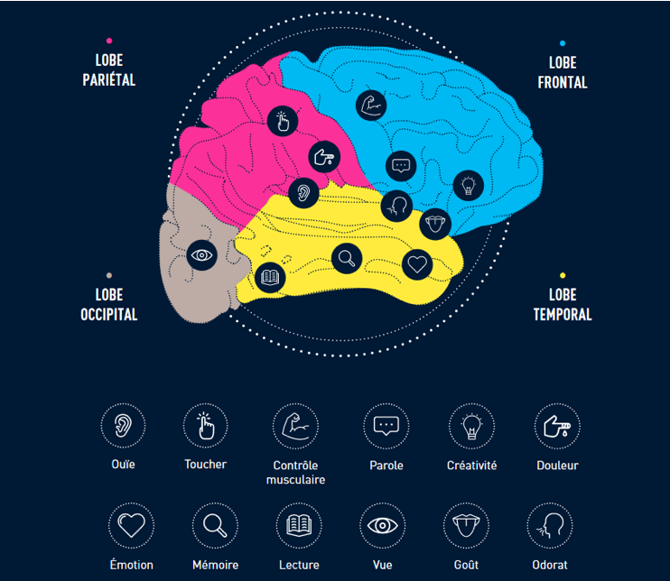

D’un point de vue philosophique, le cerveau est l’organe qui perçoit, qui pense, et qui agit. C’est donc lui qui permet de donner un sens à l’existence.
Au niveau sociologique, le cerveau est le chef d’orchestre de l’organisme qu’il gère tout en se gérant lui-même. Il est responsable de nos comportements, et donc de nos interactions avec les individus qui composent la société.
Le cerveau avec la moelle épinière constitue le système nerveux central, capable d’intégrer les informations, de contrôler la motricité et d’assurer les fonctions cognitives.
Le système nerveux de l’homme contient environ 100 milliards de neurones. Chaque neurone peut avoir jusqu’à des milliers de connexions avec d’autres neurones et des cellules effectrices. L’information, quelle qu’elle soit, circule au sein de ce réseau, sous la forme de signaux de nature électrique qui passent de cellule à cellule au niveau des synapses. C’est pendant cette circulation que l’information est traitée, souvent mise en mémoire et traduite en mouvements, comportements, paroles ou travaux adaptés.
{kind=link}